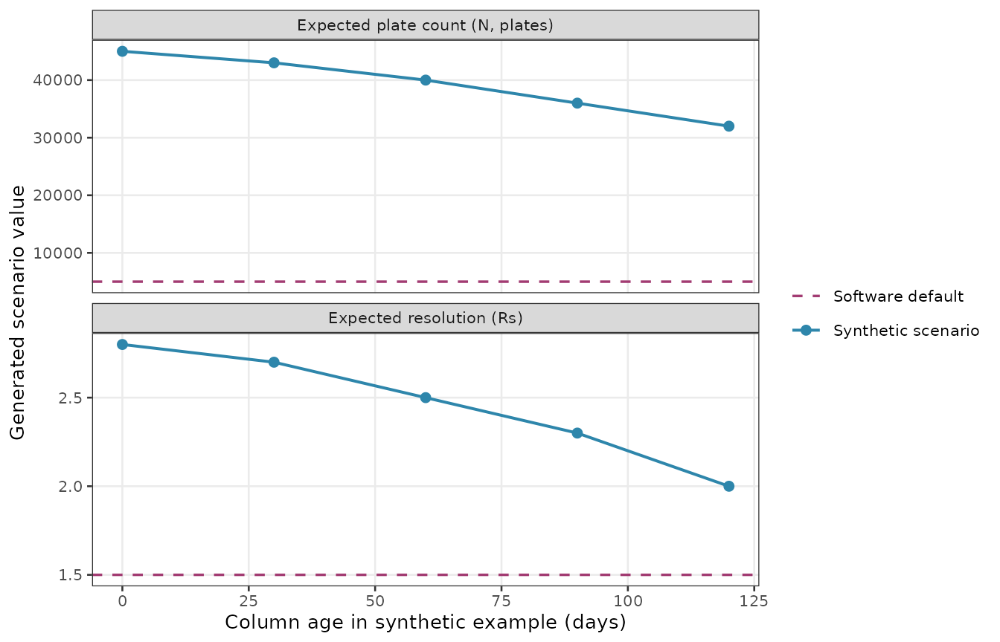

Scope
The SEC QC functions calculate resolution, plate count, asymmetry, recovery, and replicate precision from supplied peak data. The acceptance criteria are provided by the analyst or taken from the function’s defaults; they are not selected or validated by the package.
sec_system_suitability is a synthetic teaching dataset.
Its expected_* columns are generated scenario values, not
metrics calculated from the raw traces. The dataset contains a sequence
of column-age scenarios, not replicate injections, so it cannot show
repeatability.
Synthetic column-age example
library(measure.sec)
#> Loading required package: measure
#> Loading required package: recipes
#> Loading required package: dplyr
#>
#> Attaching package: 'dplyr'
#> The following objects are masked from 'package:stats':
#>
#> filter, lag
#> The following objects are masked from 'package:base':
#>
#> intersect, setdiff, setequal, union
#>
#> Attaching package: 'recipes'
#> The following object is masked from 'package:stats':
#>
#> step
library(dplyr)
library(ggplot2)
library(tidyr)
data(sec_system_suitability, package = "measure.sec")
run_summary <- sec_system_suitability |>
distinct(
run_id,
column_age_days,
expected_plate_count,
expected_resolution
) |>
arrange(column_age_days)
run_metrics <- run_summary |>
pivot_longer(
cols = c(expected_plate_count, expected_resolution),
names_to = "metric",
values_to = "expected_value"
) |>
mutate(
metric = recode(
metric,
expected_plate_count = "Expected plate count (N, plates)",
expected_resolution = "Expected resolution (Rs)"
)
)
run_metrics
#> # A tibble: 10 × 4
#> run_id column_age_days metric expected_value
#> <chr> <dbl> <chr> <dbl>
#> 1 SST-Day0 0 Expected plate count (N, plates) 45000
#> 2 SST-Day0 0 Expected resolution (Rs) 2.8
#> 3 SST-Day30 30 Expected plate count (N, plates) 43000
#> 4 SST-Day30 30 Expected resolution (Rs) 2.7
#> 5 SST-Day60 60 Expected plate count (N, plates) 40000
#> 6 SST-Day60 60 Expected resolution (Rs) 2.5
#> 7 SST-Day90 90 Expected plate count (N, plates) 36000
#> 8 SST-Day90 90 Expected resolution (Rs) 2.3
#> 9 SST-Day120 120 Expected plate count (N, plates) 32000
#> 10 SST-Day120 120 Expected resolution (Rs) 2The dashed lines below use the current default values in
measure_sec_suitability() for plate count and resolution.
They show how the software compares values with supplied criteria; they
are not regulatory limits or a qualification decision.
criteria_lines <- tibble::tibble(
metric = c(
"Expected plate count (N, plates)",
"Expected resolution (Rs)"
),
value = c(5000, 1.5)
)
ggplot(run_metrics, aes(x = column_age_days, y = expected_value)) +
geom_blank(
data = criteria_lines |> mutate(column_age_days = 0),
aes(x = column_age_days, y = value),
inherit.aes = FALSE
) +
geom_line(
aes(group = metric, colour = "Synthetic scenario"),
linewidth = 0.7
) +
geom_point(aes(colour = "Synthetic scenario"), size = 2) +
geom_hline(
data = criteria_lines,
aes(yintercept = value, colour = "Software default"),
inherit.aes = FALSE,
linetype = "dashed",
linewidth = 0.6
) +
facet_wrap(~metric, ncol = 1, scales = "free_y") +
scale_colour_manual(
name = NULL,
values = c(
"Synthetic scenario" = "#2E86AB",
"Software default" = "#A23B72"
)
) +
labs(
x = "Column age in synthetic example (days)",
y = "Generated scenario value"
) +
theme_measure_sec()
Generated plate-count and resolution values across the synthetic
column-age scenarios. Dashed lines mark the current default criteria in
measure_sec_suitability(); they are included to explain the
comparison, not to claim method acceptance.
Calculating suitability from an integration table
measure_sec_suitability() accepts a peak table with
retention times and widths. If named reference peaks are supplied, it
calculates resolution; it also calculates plate count from the selected
main peak. Tailing, recovery, and replicate RSD are reported when the
corresponding input columns or arguments are present.
The function’s current defaults are resolution at least 1.5, plate count at least 5,000, tailing factor from 0.8 to 1.5, recovery from 95% to 105%, retention-time RSD at most 1%, and area RSD at most 2%. These are software defaults. Select criteria for the method and review the width definitions and calculation conventions before using the output.
# Replace these objects with the integration table and criteria for your method.
sst <- measure_sec_suitability(
peaks = integration_peak_table,
reference_peaks = critical_peak_names,
criteria = method_criteria
)
print(sst)Repeatability requires replicate injections
measure_sec_suitability() can calculate retention-time
and peak-area RSD when the peak table includes a replicate
column and named peaks. The synthetic column-age dataset has no
replicate injections, so those RSD values cannot be calculated from it.
Pass replicate-level integration results when evaluating precision; keep
missing results as missing rather than replacing them with zero.
# The table must contain actual repeated injections with peak-level values.
precision_results <- measure_sec_suitability(
peaks = replicate_peak_table,
reference_peaks = critical_peak_names,
criteria = method_criteria
)
precision_results$results$retention_rsd
precision_results$results$area_rsdSee also
- Protein SEC analysis — protein signal and area summaries
- Calibration management — SEC calibration
- Exporting results — tables and reports
- SEC analysis reference — QC function reference
Session info
sessionInfo()
#> R version 4.6.2 (2026-10-29)
#> Platform: x86_64-pc-linux-gnu
#> Running under: Ubuntu 26.04.1 LTS
#>
#> Matrix products: default
#> BLAS: /usr/lib/x86_64-linux-gnu/openblas-pthread/libblas.so.3
#> LAPACK: /usr/lib/x86_64-linux-gnu/openblas-pthread/libopenblasp-r0.3.32.so; LAPACK version 3.12.0
#>
#> locale:
#> [1] LC_CTYPE=C.UTF-8 LC_NUMERIC=C LC_TIME=C.UTF-8
#> [4] LC_COLLATE=C.UTF-8 LC_MONETARY=C.UTF-8 LC_MESSAGES=C.UTF-8
#> [7] LC_PAPER=C.UTF-8 LC_NAME=C LC_ADDRESS=C
#> [10] LC_TELEPHONE=C LC_MEASUREMENT=C.UTF-8 LC_IDENTIFICATION=C
#>
#> time zone: UTC
#> tzcode source: system (glibc)
#>
#> attached base packages:
#> [1] stats graphics grDevices utils datasets methods base
#>
#> other attached packages:
#> [1] tidyr_1.3.2 ggplot2_4.0.4 measure.sec_0.0.0.9000
#> [4] measure_0.0.1.9003 recipes_1.4.0 dplyr_1.2.1
#>
#> loaded via a namespace (and not attached):
#> [1] gtable_0.3.6 xfun_0.62 bslib_0.12.0
#> [4] lattice_0.23-1 vctrs_0.7.3 tools_4.6.2
#> [7] generics_0.1.4 parallel_4.6.2 tibble_3.3.1
#> [10] pkgconfig_2.0.3 Matrix_1.7-6 data.table_1.18.6.1
#> [13] RColorBrewer_1.1-3 S7_0.2.2 desc_1.4.3
#> [16] lifecycle_1.0.5 compiler_4.6.2 farver_2.1.2
#> [19] textshaping_1.0.5 codetools_0.2-20 htmltools_0.5.9
#> [22] class_7.3-24 sass_0.4.10 yaml_2.3.12
#> [25] prodlim_2026.03.11 pillar_1.11.1 pkgdown_2.2.1
#> [28] jquerylib_0.1.4 MASS_7.3-66 cachem_1.1.0
#> [31] gower_1.0.2 rpart_4.1.27 parallelly_1.50.0
#> [34] lava_1.11 tidyselect_1.2.1 digest_0.6.39
#> [37] future_1.82.0 purrr_1.2.2 listenv_1.1.0
#> [40] labeling_0.4.3 splines_4.6.2 fastmap_1.2.0
#> [43] grid_4.6.2 cli_3.6.6 magrittr_2.0.5
#> [46] utf8_1.2.6 survival_3.8-12 future.apply_1.21.0
#> [49] withr_3.0.3 scales_1.4.0 lubridate_1.9.5
#> [52] timechange_0.4.0 rmarkdown_2.32 globals_0.20.0
#> [55] otel_0.3.0 nnet_7.3-21 timeDate_4052.112
#> [58] ragg_1.5.2 evaluate_1.0.5 knitr_1.52
#> [61] hardhat_1.4.3 rlang_1.3.0 Rcpp_1.1.2
#> [64] glue_1.8.1 ipred_0.9-16 jsonlite_2.0.0
#> [67] R6_2.6.1 systemfonts_1.3.3 fs_2.1.0